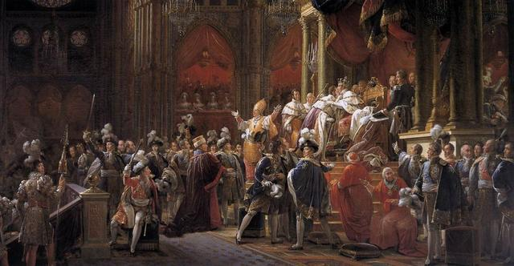

Two Enemies of the Enlightenment (Isaiah Berlin)
“It is also said that man is by nature rational.
Let us consider this proposition too, says Maistre. Consider the institutions by which man is governed.
Consider the institution of marriage.
Nothing is more irrational than marriage, says Maistre. Why should a man choose a woman with whom to live for the rest of his life, when his attention might easily be distracted by other persons more attractive to him in later life?
Nevertheless, marriage is the one fundamental institution upon which human society is founded, and all attempts at creating societies founded upon free love have toppled.

Consider the institution of monarchy.
What is more irrational or absurd than that the son of a king, even a good king, should succeed him because he is his son? A wise king may have a stupid son, a good king may have an abominable son, and there is no reason for supposing that the children of good men or of strong men or of useful men will have the same qualities themselves.
Consequently it is a far more rational arrangement to have such a system as you have in Poland, where you have the liberum veto, where the nobles must agree upon who is to be king.
But what has actually happened? France was governed by sixty-six kings, some good, some bad, but mostly efficient, mostly capable, and is certainly the fairest kingdom upon the face of the earth, whereas Poland with its rational system is plunged into constant turbulence and has collapsed before the very eyes of the civilised world in a welter of blood and chaos.”